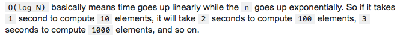

- bigocheatsheet.com
- A coffee-break introduction to time complexity of algorithms
- O(1) Constant Time
- Melhor caso possível
- Se um algoritmo possui tempo constante, significa que sempre vai levar o mesmo tempo para produzir o resultado.
- Exemplo: array.pop() -> tirar último item de um array, independente do tamanho, levará sempre o mesmo tempo!
- Logarithms O(log n)
- Preferível na maioria das vezes
- Logaritimos são o inverso da exponenciação.
- Exemplo: Algoritmo de busca binária -> dividir para conquistar
- 
- Linear time O(n)
- Preferível na maioria das vezes
- Se um algoritmo possui tempo linear, significa que o tempo de execução aumenta linearmente de acordo com o tamanho do input.
- Exemplo: array.forEach() soma de todos os valores
- Linear Logarithms O(n log n)
- Aceitável
x = n while ( x > 0 ) { y = x while ( y > 0 ) { y = y / 2 } x -= 1 } - Examples: Quicksort, Mergesort and Heapsort -> dividir para conquistar
- Aceitável
- Quadratic time O(n²) :skull:
- Bom evitar
- O tempo de execução desse algoritmo é diretamente proporcional ao o quadrado do input.
- Ou seja: 2->4 3->9 4->16 5->25 etc
- Exemplo: Soma de matrizes
for (var outer = 0; outer < elements.Count; outer++){ for (var inner = 0; inner < elements.Count; inner++){ ... } }
- Exponential Time O(2^n) :skull: :skull:
- Um dos piores casos, sempre é bom evitar
- Indica um algoritmo cujo crescimento dobra a cada adição ao conjunto de dados de entrada. A curva de crescimento de uma função O (2N) é exponencial - começando muito rasa e depois subindo meteoricamente
- Exemplo: recursive calculation of Fibonacci numbers
int Fibonacci(int number){ if (number <= 1) return number; return Fibonacci(number - 2) + Fibonacci(number - 1); }
- Factorial Time O(n!) :skull: :skull: :skull:
- Sempre tente evitar!
- Extremamente não perfomático
- Vai executar em tempo fatorial para cada operação
- Exemplo: Problema do vendedor viajante
- "Dada uma lista de cidades e as distâncias entre cada par de cidades, qual é o caminho mais curto possível que visita cada cidade e retorna à cidade de origem?"
- Resumo